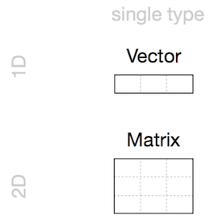
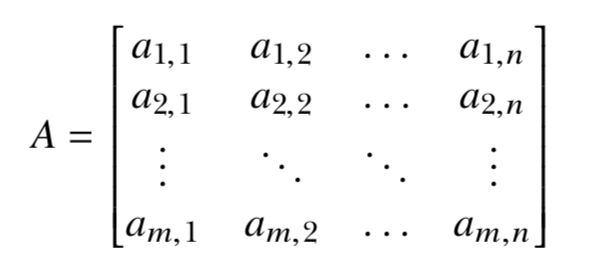
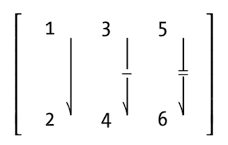
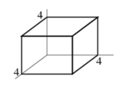
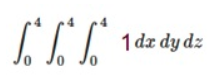

R Language
Scientific Calculator
Class
Vectors
Matrices
Arrays
Scientific Calculator
?Arithmetic or help(“Arithmetic”)
- ^ (exponentiation)
- sqrt (the square root)
- log (logarithm)
- exp (exponential)
- D (derivative)
- integrate (integration)
- sin (sinus)
- cos (cosinus)
- sum (sum)
- mean (mean)
example(integer) , demo(graphics)
Scientific Calculator
2+3## [1] 514/6## [1] 2.33333314/6+5## [1] 7.33333314/(6+5)## [1] 1.2727273^2## [1] 92^3## [1] 8sqrt(x=9)## [1] 3sqrt(x=5.311)## [1] 2.304561Scientific Calculator
f <- expression(x^2+3*x) # you can check ?expression
D(f,'x') # Calculate (first) derivative of f ## 2 * x + 3 # with respect to xClass
- Data Structures
- Data Types
Data Structures (R-Objects)
- (Atomic) Vectos
- Matrices
- Array
- Data Frame
- List
Data Structures (R-Objects)

Data Structures (R-Objects)

- Homogeneous: Vector(1d), Matrix(2d), Array(nd)
- Heterogeneous: List(1d?), Data frame(2d)
Data Types
- Numeric (Double)
- Integer
- Complex
- Logical
- Character
- Special Values
- Date/Time
Variables are defined with different data types
Also
Variables are assigned with R-Objects
—> The data type of the R-object
Data Types - Numeric (Double)
Any number with (or without) a decimal point.
a <- 3.8
a## [1] 3.8class(a)## [1] "numeric"b <- 4
b## [1] 4class(b)## [1] "numeric"c <- sqrt(2)
c## [1] 1.414214class(c)## [1] "numeric"d <- 3.5:9.5
d## [1] 3.5 4.5 5.5 6.5 7.5 8.5 9.5class(d)## [1] "numeric"class(1)## [1] "numeric"Data Types - Integer
Kind of a sub-class of the numeric class.
The suffix L tells R to store this as an integer.
a <- 7
a## [1] 7class(a)## [1] "numeric"b <- 7L
b## [1] 7class(b)## [1] "integer"c <- 5:9
c## [1] 5 6 7 8 9class(c)## [1] "integer"d <- 5.1:9.1
d## [1] 5.1 6.1 7.1 8.1 9.1class(d)## [1] "numeric"class(3.2L)## [1] "numeric"Numeric and Integer
pi
sqrt(2)^2-2
Numeric (64-bit) -> big memery and calculations
Integer (32-bit) -> Constant lalues like ID
6 digits after decimal
16 significant digits
Data Types - Complex
Complex: x2 = −1 (imaginary number)
a <- i # This will give errorb <- 1i
b## [1] 0+1iclass(b)## [1] "complex"class(1+2i)
class(2iL)try
class(((1i^2)^2))## [1] "complex"is.complex((1i^2)^2)## [1] TRUEisTRUE(is.complex((1i^2)^2))## [1] TRUE(1i^2)^2## [1] 1+0iData Types - Logical
TRUE or FALSE - Logical Operators
- < (less than)
- <= (less than or equal to)
- > (greater than)
- >= (greater than or equal to)
- == (exactly equal to)
- != (not equal to)
- !x (Not x)
- x | y (x OR y)
- x & y (x AND y)
- isTRUE(x) (test if X is TRUE)
Data Types - Logical
5 < 9## [1] TRUE5 < -9## [1] FALSEa <- 5 < -9
class(a)## [1] "logical"1:10## [1] 1 2 3 4 5 6 7 8 9 101:10 >= 5## [1] FALSE FALSE FALSE FALSE TRUE TRUE TRUE TRUE TRUE TRUEx <- 1:10 >= 5
1:10 < 2## [1] TRUE FALSE FALSE FALSE FALSE FALSE FALSE FALSE FALSE FALSEy <- 1:10 < 2
x | y## [1] TRUE FALSE FALSE FALSE TRUE TRUE TRUE TRUE TRUE TRUEz <- x | y
z## [1] TRUE FALSE FALSE FALSE TRUE TRUE TRUE TRUE TRUE TRUE!z## [1] FALSE TRUE TRUE TRUE FALSE FALSE FALSE FALSE FALSE FALSEclass(z)## [1] "logical"b <- 4:8
b## [1] 4 5 6 7 8c <- 7:11
c## [1] 7 8 9 10 11b != c## [1] TRUE TRUE TRUE TRUE TRUEd <- 5:12
b != d## Warning in b != d: longer object length is not a multiple of shorter object
## length## [1] TRUE TRUE TRUE TRUE TRUE TRUE TRUE TRUEData Types - Character
Data type consists of letters or words. String.
single quotes: ‘…’ or double quotes " … "
name <- emir # This will give an errorname <- 'emir'
name## [1] "emir"class(name)## [1] "character"a <- 23
a## [1] 23class(a)## [1] "numeric"b <- '23'
b## [1] "23"class(b)## [1] "character"print('hello')## [1] "hello"cat('hello')## helloclass(print('hello'))## [1] "hello"## [1] "character"class(cat("hello"))## hello## [1] "NULL"Special Values
Null, Infinity, Not a Number, Not Available
NULL # Null (“empty” entity)## NULLInf # Infinity## [1] Infclass(Inf)## [1] "numeric"Inf*-9## [1] -Infis.finite(Inf)## [1] FALSE1/0## [1] InfNaN # Not a Number## [1] NaNclass(NaN)## [1] "numeric"-Inf+Inf## [1] NaNis.nan(5^(-Inf/Inf))## [1] TRUE0/0## [1] NaNNA # Not Available (“missing” entity)## [1] NAclass(NA)## [1] "logical"Data Types - Date/Time
Sys.Date( ) ## [1] "2019-10-18"date()## [1] "Fri Oct 18 20:13:54 2019"date <- "2007-06-22"
class(date)## [1] "character"date1 <- as.Date(date) # Coercion
class(b) ## [1] "character"date2 <- as.Date("2004-02-13")
date1 - date2## Time difference of 1225 daysdate_difference <- date1 - date2
class(date_difference)## [1] "difftime"%d day as a number (0-31) 01-31
%a abbreviated weekday Mon
%A unabbreviated weekday Monday
%m month (00-12) 00-12
%b abbreviated month Jan
%B unabbreviated month January
%y 2-digit year 07
%Y 4-digit year 2007today <- Sys.Date()
format(today, format="%B %d %Y")## [1] "October 18 2019"Coercion

Coercion
3## [1] 3class(3)## [1] "numeric"as.numeric(3)## [1] 3as.character(3)## [1] "3"as.logical(3)## [1] TRUEFALSE## [1] FALSEclass(FALSE)## [1] "logical"as.character(FALSE)## [1] "FALSE"as.numeric(FALSE)## [1] 0as.numeric(TRUE)## [1] 1TRUE+TRUE## [1] 2class(TRUE+TRUE)## [1] "integer"Class - Data Structure
Data Structures
- Vector
- Array
- Matrix
- Data Frame
- List
(Atomic) Vector
The simplest data structure in R
Vectors are a list-like structure that contain items of the same data type.
spring_month <- "April"
spring_month## [1] "April"spring_months <- c("March", "April","May","June")
spring_months## [1] "March" "April" "May" "June"class(spring_months)## [1] "character"c means “combine”
(Atomic) Vector
myvec <- c(1, 3, 1, 42)
a <- 35
myvec2 <- c(3L, 3.45, 1e+03, 64^0.5, 2+(3-1.1)/9.44, a)
myvec3 <- c(myvec, myvec2)
myvec3## [1] 1.000000 3.000000 1.000000 42.000000 3.000000
## [6] 3.450000 1000.000000 8.000000 2.201271 35.000000x <- c("all", "b", "olive")Length of a vector, length(vector_name)
length(x)## [1] 3Indexing element, vector_name[element_position]
x[2]## [1] "b"Manipulating element of vector, assigning arrow
x[2] <- "b_new"
x## [1] "all" "b_new" "olive"Note: In R, counting elements start position 1, not 0.
(Atomic) Vector
y <- c( 1.2, 5, "Rt", "2000", 20, 4905)
y [0]## character(0)class(y)## [1] "character"y## [1] "1.2" "5" "Rt" "2000" "20" "4905"Sequences
7:16.4## [1] 7 8 9 10 11 12 13 14 15 16a <- 7:16
a## [1] 7 8 9 10 11 12 13 14 15 16seq(from=7,to=16,by=3)## [1] 7 10 13 16seq(50,150,25)## [1] 50 75 100 125 150seq(50,149,25)## [1] 50 75 100 125seq(from=3,to=27,length.out=40)## [1] 3.000000 3.615385 4.230769 4.846154 5.461538 6.076923 6.692308
## [8] 7.307692 7.923077 8.538462 9.153846 9.769231 10.384615 11.000000
## [15] 11.615385 12.230769 12.846154 13.461538 14.076923 14.692308 15.307692
## [22] 15.923077 16.538462 17.153846 17.769231 18.384615 19.000000 19.615385
## [29] 20.230769 20.846154 21.461538 22.076923 22.692308 23.307692 23.923077
## [36] 24.538462 25.153846 25.769231 26.384615 27.000000Round
3/2## [1] 1.5round(3/2)## [1] 2round(5.1)## [1] 5round(pi)## [1] 3(Atomic) Vector
Repetition
rep(x=1, times=4)## [1] 1 1 1 1rep(x=c(3, 62, 8),times=3)## [1] 3 62 8 3 62 8 3 62 8rep(x=c(3, 62, 8),times=3,each=2)## [1] 3 3 62 62 8 8 3 3 62 62 8 8 3 3 62 62 8 8Sorting
sort(x=c(2.5, -1, -10, 3.44)) # decreasing=FALSE (default)## [1] -10.00 -1.00 2.50 3.44sort(x=c(2.5, -1,- 10, 3.44), decreasing=TRUE)## [1] 3.44 2.50 -1.00 -10.00Random - Uniform Distribution
runif(15, min = 20, max = 45)## [1] 26.57003 42.68007 40.77596 22.41273 32.29571 34.85446 41.97477
## [8] 39.19430 35.57645 37.03241 38.43980 25.48803 28.36540 24.88241
## [15] 27.75771runif(15, 20, 45)## [1] 24.56990 38.28887 28.09007 26.87571 44.61091 43.64318 27.81246
## [8] 40.28032 34.84911 22.56070 44.71449 31.03685 35.19337 29.59317
## [15] 26.46730runif(25, 60, 50)## Warning in runif(25, 60, 50): NAs produced## [1] NaN NaN NaN NaN NaN NaN NaN NaN NaN NaN NaN NaN NaN NaN NaN NaN NaN
## [18] NaN NaN NaN NaN NaN NaN NaN NaNRandom variable can be saved
set.seed(1)
runif(15, 20, 45)## [1] 26.63772 29.30310 34.32133 42.70519 25.04205 42.45974 43.61688
## [8] 36.51994 35.72785 21.54466 25.14936 24.41392 37.17557 29.60259
## [15] 39.24604Matrices
Vectors indexed using two indices instead of one.
 
n <- runif(9,1,100)
n## [1] 50.27222 72.04423 99.19870 38.62348 77.96708 93.53582 22.00211 65.51570
## [9] 13.42995matrix(n, nrow = 3, ncol = 3)## [,1] [,2] [,3]
## [1,] 50.27222 38.62348 22.00211
## [2,] 72.04423 77.96708 65.51570
## [3,] 99.19870 93.53582 13.42995n2 <- runif(10,1,100)
matrix(n2, nrow = 3, ncol = 3)## Warning in matrix(n2, nrow = 3, ncol = 3): data length [10] is not a sub-
## multiple or multiple of the number of rows [3]## [,1] [,2] [,3]
## [1,] 27.454846 38.85641 48.72593
## [2,] 39.225295 87.09939 60.35702
## [3,] 2.325643 34.69455 49.86059Matrices
x <- as.numeric(seq(10,120,10))
mx <- matrix(x,3,4) # n, nrow, ncol
mx## [,1] [,2] [,3] [,4]
## [1,] 10 40 70 100
## [2,] 20 50 80 110
## [3,] 30 60 90 120class(mx)## [1] "matrix"class(mx[1])## [1] "numeric"typeof(mx)## [1] "double"mx[1,]## [1] 10 40 70 100mx[,2]## [1] 40 50 60mx[,2:4]## [,1] [,2] [,3]
## [1,] 40 70 100
## [2,] 50 80 110
## [3,] 60 90 120mx_new <- mx[,2:4]
mx## [,1] [,2] [,3] [,4]
## [1,] 10 40 70 100
## [2,] 20 50 80 110
## [3,] 30 60 90 120mx[2,3] <- "rose"
mx## [,1] [,2] [,3] [,4]
## [1,] "10" "40" "70" "100"
## [2,] "20" "50" "rose" "110"
## [3,] "30" "60" "90" "120"class(mx)## [1] "matrix"typeof(mx)## [1] "character"mx_new <- as.numeric(mx)## Warning: NAs introduced by coercionmx_new## [1] 10 20 30 40 50 60 70 NA 90 100 110 120class(mx_new)## [1] "numeric"typeof(mx_new)## [1] "double"Matrices
 
m_mycol <- matrix(c(1, 2, 3, 4, 5, 6),
nrow = 2,
ncol = 3,
byrow = FALSE) # Default
m_mycol ## [,1] [,2] [,3]
## [1,] 1 3 5
## [2,] 2 4 6m_byrow <- matrix(c(1, 2, 3, 4, 5, 6),
nrow = 2,
ncol = 3,
byrow = TRUE)
m_byrow ## [,1] [,2] [,3]
## [1,] 1 2 3
## [2,] 4 5 6t(m_byrow)## [,1] [,2]
## [1,] 1 4
## [2,] 2 5
## [3,] 3 6length(mx)## [1] 12dim(mx)## [1] 3 4Arrays

x <- 1:24
x## [1] 1 2 3 4 5 6 7 8 9 10 11 12 13 14 15 16 17 18 19 20 21 22 23
## [24] 24array(x, dim = c(4,3,2)) # raw, col, level## , , 1
##
## [,1] [,2] [,3]
## [1,] 1 5 9
## [2,] 2 6 10
## [3,] 3 7 11
## [4,] 4 8 12
##
## , , 2
##
## [,1] [,2] [,3]
## [1,] 13 17 21
## [2,] 14 18 22
## [3,] 15 19 23
## [4,] 16 20 24arr <- array(x, c(4,3,2))
class(arr)## [1] "array"typeof(arr)## [1] "integer"Arrays

arr <- array(data=10:33,dim=c(3,4,2))
arr## , , 1
##
## [,1] [,2] [,3] [,4]
## [1,] 10 13 16 19
## [2,] 11 14 17 20
## [3,] 12 15 18 21
##
## , , 2
##
## [,1] [,2] [,3] [,4]
## [1,] 22 25 28 31
## [2,] 23 26 29 32
## [3,] 24 27 30 33arr[2,2,1]## [1] 14arr[-1,,]## , , 1
##
## [,1] [,2] [,3] [,4]
## [1,] 11 14 17 20
## [2,] 12 15 18 21
##
## , , 2
##
## [,1] [,2] [,3] [,4]
## [1,] 23 26 29 32
## [2,] 24 27 30 33Practice
Scientific Calculator 
Practice
Scientific Calculator
Problem: Compute double, triple or higher order integrals
 
install.packages("cubature")
library(cubature)
f <- function(x) 1
adaptIntegrate(f,lowerLimit = c(0,0,0),upperLimit = c(4,4,4))$integral
[1] XXPractice
Create a Function
Problem: Take a sample belonged to population and sum
pop <- 1:6 # This is my population
samp <- sample(pop, size = 2) # This is my sample, I choose two var.
sum(samp)## [1] 9pop## [1] 1 2 3 4 5 6samp## [1] 5 4I want to create a new function named roll()
roll <- function() {
pop <- 1:6
samp <- sample(pop, size = 2)
sum(samp)
}roll()## [1] 6Practice
Create a Function
Problem: What if we removed one line of code from our function and changed the name pop to box ?
roll2 <- function() {
samp <- sample(box, size = 2)
sum(samp)
}roll2() # This will give errorRe-create function
roll2 <- function(box) {
samp <- sample(box, size = 2)
sum(samp)
}roll2(box = 1:4)## [1] 5roll2(box = 1:6)## [1] 9roll2(1:20)## [1] 27Practice
Create a Function

- You can add new options
- { } and () are important
Practice
- Print your name as a character string.
- Print your age as a numeric type.
- Print your age as a character type.
print()
- Create a numeric vector with your favorite numbers.
- Check the lenght of the vector, lenght().
- Choose the last element (indexing) with [].
- Create 4 × 2 matrice, fill with numbers
- Delete first row.
- Generate 48 random number and assign, runif().
- Create and store a three-dimensional array with six layers of a 4 × 2 matrice, and fill it with these random numbers.
Summary
- Arithmetic Operators ( +, -, /, x )
- Logical Operators ( <, >, ==, != ….)
- Special Values ( NULL, Nan, NA, Inf)
- Vector, Matrice, Array (1d and Homogeneous)
- class(), print(), seq(), runif()
- c(), []
- ?xxx or help(xxx)
- install.packages(), library()